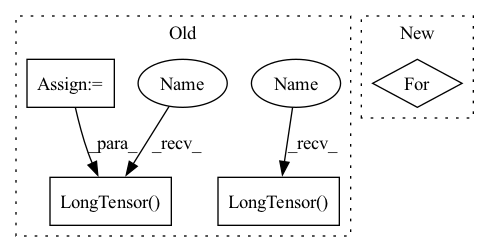

Pattern ID :11669
Before Change
for data_row in tqdm(dev_data):
results = {}
encode_results = self.data_manager.tokenizer(data_row.get("text"), padding="max_length")
input_ids = encode_results.get("input_ids")
token_ids = torch.unsqueeze(torch.LongTensor( input_ids) , 0).to(self.device)
attention_mask = torch.unsqueeze(torch.LongTensor(
encode_results.get("attention_mask")) , 0).to(self.device)
segment_ids = torch.unsqueeze(torch.LongTensor(
encode_results.get("token_type_ids")), 0).to(self.device)
model_outputs = self.model(token_ids, attention_mask, segment_ids).detach().to("cpu")After Change
segment_ids = segment_ids.to(self.device)
attention_mask = attention_mask.to(self.device)
model_outputs = self.model(token_ids, attention_mask, segment_ids).detach().to("cpu")
for text, model_output, entity_result in zip(texts, model_outputs, entity_results):
model_output = torch.unsqueeze(model_output, 0)
p_results = self.data_manager.extract_entities(text, model_output)
for class_id, entity_set in entity_result.items():
p_entity_set = p_results.get(class_id)In pattern: SUPERPATTERN
Frequency: 3
Non-data size: 4
Instances Fragment ID: 39498968
Project Name: stanleylsx/entity_extractor_by_binary_tagging
Commit Name: d53c08ec0238a5380c946d95f580df225d049c5c
Time: 2022-06-07
Author: gzlishouxian@gmail.com
File Name: engines/train.py
M Class Name: Train
N Class Name: Train
M Method Name: validate(2)
N Method Name: validate(2)
M Parent Class:
N Parent Class:
M File Name: engines/train.py
N File Name: engines/train.py
M Start Line: 103
M End Line: 136
N Start Line: 109
N End Line: 129
Before Change
for data_row in tqdm(dev_data):
results = {}
encode_results = self.data_manager.tokenizer(data_row.get("text"), padding="max_length")
input_ids = encode_results.get("input_ids")
token_ids = torch.unsqueeze(torch.LongTensor( input_ids) , 0).to(self.device)
attention_mask = torch.unsqueeze(torch.LongTensor(
encode_results.get("attention_mask")), 0).to(self.device)
segment_ids = torch.unsqueeze(torch.LongTensor(
encode_results.get("token_type_ids")) , 0).to(self.device)
model_outputs = self.model(token_ids, attention_mask, segment_ids).detach().to("cpu")
p_results = self.data_manager.extract_entities(data_row.get("text"), model_outputs)
for class_name, class_id in self.data_manager.categories.items():After Change
segment_ids = segment_ids.to(self.device)
attention_mask = attention_mask.to(self.device)
model_outputs = self.model(token_ids, attention_mask, segment_ids).detach().to("cpu")
for text, model_output, entity_result in zip(texts, model_outputs, entity_results):
model_output = torch.unsqueeze(model_output, 0)
p_results = self.data_manager.extract_entities(text, model_output)
for class_id, entity_set in entity_result.items():
p_entity_set = p_results.get(class_id) Fragment ID: 39498974
Project Name: stanleylsx/entity_extractor_by_pointer
Commit Name: d53c08ec0238a5380c946d95f580df225d049c5c
Time: 2022-06-07
Author: gzlishouxian@gmail.com
File Name: engines/train.py
M Class Name: Train
N Class Name: Train
M Method Name: validate(2)
N Method Name: validate(2)
M Parent Class:
N Parent Class:
M File Name: engines/train.py
N File Name: engines/train.py
M Start Line: 103
M End Line: 136
N Start Line: 109
N End Line: 129
Before Change
ap = None
// build cache
print("... building dataset cache ...")
self.cached_text = list()
self.cached_text_lens = list()
self.cached_speech = list()
self.cached_speech_lens = list()
for path in key_list:
transcript = self.path_to_transcript_dict[path]
wave, sr = sf.read(os.path.join("Corpora/CSS10/", path))
if 50000 < len(wave) < 230000:
print("processing {}".format(path))
if ap is None:
ap = AudioPreprocessor(input_sr=sr, output_sr=16000, melspec_buckets=80, hop_length=256, n_fft=1024)
self.cached_text.append(tf.string_to_tensor(transcript).long())
self.cached_text_lens.append(torch.LongTensor( [len(self.cached_text[-1])]) )
self.cached_speech.append(ap.audio_to_mel_spec_tensor(wave).transpose(0, 1))
self.cached_speech_lens.append(torch.LongTensor( [len(self.cached_speech[-1])]) )
if self.spemb:
print("not implemented yet")
raise NotImplementedErrorAfter Change
for key_split in key_splits:
thread_list.append(Thread(target=self.cache_builder_thread, args=(key_split,)))
thread_list[-1].start()
for thread in thread_list:
thread.join()
def cache_builder_thread(self, path_list):
for path in path_list: Fragment ID: 39498972
Project Name: digitalphonetics/ims-toucan
Commit Name: 21527c7e2ea36abafa7885cef64519affbb0e587
Time: 2021-03-01
Author: florian.lux@ims.uni-stuttgart.de
File Name: TransformerTTS/TransformerTTSDataset.py
M Class Name: TransformerTTSDataset
N Class Name: TransformerTTSDataset
M Method Name: __init__(6)
N Method Name: __init__(5)
M Parent Class: Dataset
N Parent Class: Dataset
M File Name: TransformerTTS/TransformerTTSDataset.py
N File Name: TransformerTTS/TransformerTTSDataset.py
M Start Line: 14
M End Line: 51
N Start Line: 15
N End Line: 47